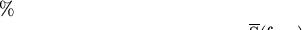

The routines which draw text all allow you to include escape sequences in the text to be plotted. These are character sequences that are interpreted as instructions to change fonts, draw superscripts and subscripts, draw non-ASCII (e.g. Greek), and so on. All escape sequences start with a number symbol (#).
The following escape sequences are defined:
Sections of text can have an underline or overline appended. For
example, the string


is obtained by specifying "#+S#+(#-freq#-)".
Greek letters are obtained by #g followed by a Roman letter.
Table  shows how these letters map into Greek
characters.
table
shows how these letters map into Greek
characters.
table
3-d Plots, Contour Plots, Escape Sequences, Advanced Use